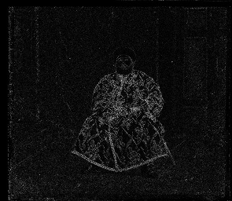
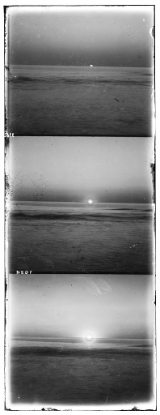
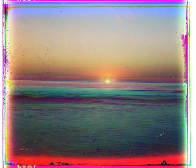
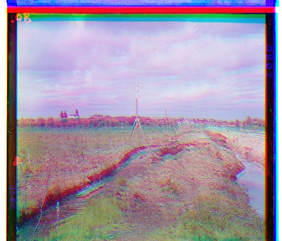
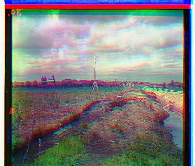
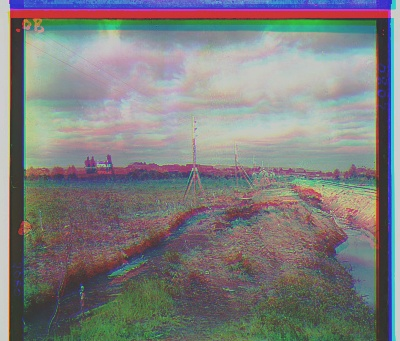
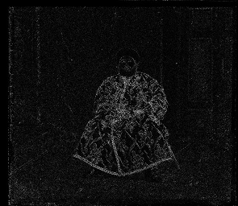
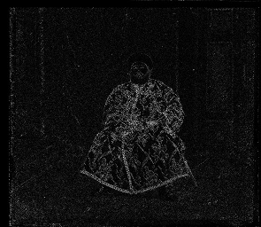

Images of the Russian Empire: Colorizing the Prokudin-Gorskii photo collection
Description
Sergei Mikhailovich Prokudin-Gorskii had an idea to create colored images
using the tools available to him. His idea was simple: record three exposures
of every scene onto a glass plate using a red, a green, and a blue filter.
Never mind that there was no way to print color photographs until much later –
he envisioned special projectors to be installed in “multimedia” classrooms
all across Russia where the children would be able to learn about their vast
country. The result was a series of photos that are for the red, green, and
blue channels. The goal of this project is to align the channels and create a
colored image.
This project experiments with 3 different alignment strategies: Euclidean
Distance (Mean Square Difference), Normalized Cross Correlation, and Sobel
Edge Detection.
Method
Let the two channels be
. Let the shift functions be
,
, which shifts an image
in the
and
directions by
pixels.
Euclidean Distance (Mean Squared Difference)
For this method we compute the Euclidean Distance bewtween the channels. We
seek to minimize this distance due to our assumption that bright areas should
be bright across all channels. Thus let the shifted channel 1 be
, then
We then find
where
Normalized Cross Correlation (NCC)
For this method we compute the Cross Correlation. We seek to maximize this
since we believe that areas in which the image is bright
relative to the rest of the image should be
relatively bright in all channels. This improves upon MSD
since it there may be images that are brighter for an entire channel, which
throws off the metric. Let the normalized channels be
This normalizes the mean and variance of the vectors. let the shifted channel
1 be
, then
We then find
where
Sobel Edge Detection (SED)
For this method we still compute the Cross Correlation and seek to maximize
this. However, the features are no longer the pixel values, but the edge
features created by the Sobel Edge Extractor. Let the extracted features
channels be
Since Sobel already normalizes, we do not need to normalize again. Let the
shifted channel 1 be
, then
We observe that the MSD alignment strategy fails in Emir, Melons, and Lady.
This is due to the luminencne in the RGB channels not aligning, and the
strategy going off course because of it. We also try multiscale alignment even
for smaller JPG’s. This leads to compounding errors for smaller images for the
MSD strategy. Cross correlation improves this, and no image is greatly color
shifted like MSD. However, in Emir’s photo for example, the channels are still
visibily misaligned. This is most likely due to the differently thick edges
lining up, messing up the alignment of the image subject. We improved results
by suing an edge detector. Since all 3 channels describe the same subject, we
can ssume that the object’s edges will align. By using the Sobel Edge
extractor, we can extract edges and then compute Cross Correlation on this
edge feature. This leads to much better results as shown in the above table.
Edge Detector
Below are the Sobel features of the Red, Green, and Blue channels for Emir

Automatic Contrast
For automatic contrast, we normalize the histogram to both linear and sigmoid
distributions. To achieve this, we first compute the percentile of a pixel in
its channel relative to the rest of the image. Then we replace its value by
the the value of our function at the point of that percentile. If a pixel is
at the 50 percentile, then if we use the linear case, then its value should be
0.5 × 255 = 128 (rounded to the nearest
integer). The linear function uses a linear function to create the histogram
function, and the sigmoid one uses a sigmod function.
Below we test our method on 3 images downloaded from the Prokudin-Gorskii
collection.
Original
Uncorrected
Linear Contrast
Sigmoid Contrast





Run Time
Method
Runtime (all 14 images)
MSD Minimization
04:37
Normalized CC
09:45
Sobel Edge detection
06:47
MSD comptues the fastest, followed by Sobel, and NCC computes the slowest.


 
